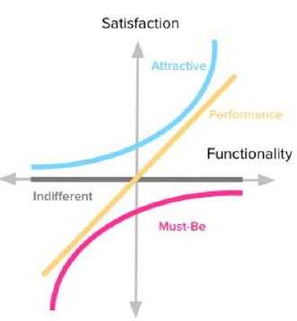
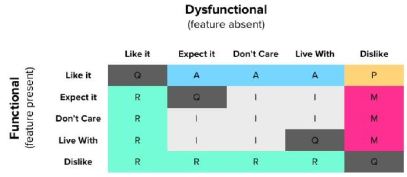

<style> .reveal section img { background:none; border:none; box-shadow:none; } #left { margin: 10px 0 15px 20px; text-align: center; float: left; z-index:-10; width:48%; font-size: 0.85em; line-height: 1.5; } #right { margin: 10px 0 15px 0; float: right; text-align: center; z-index:-10; width:48%; font-size: 0.85em; line-height: 1.5; } </style> # Técnica de priorización: Metolodogía Kano <span style="font-size: 20.0pt; "> **Profesor:** Ing. Israel Chaves Arbaiza </span> <span style="font-size: 20.0pt;"> **Curso**: Mecatrónica </span> --- ## Metodología Kano <span style="font-size: 22.0pt; "> Se responden 2 preguntas: * ¿Cómo se sentiría si el producto tuviera esta funcionalidad? * ¿Cómo se sentiría si el producto **NO** tuviera esta funcionalidad? * R/ Me gusta $|$ Lo espero (debería tenerlo) $|$ No me importa $|$ Puedo tolerarlo $|$ No me gusta   </span> --- ## Matriz editable de priorización Kano <span style="font-size: 22.0pt; "> [Hoja de cálculo editable](https://docs.google.com/spreadsheets/d/1ezW6MEa7fBsoEofhC8wBJLcN2C1psr2ZCj5O_i-OO9U/edit?usp=sharing) </span>